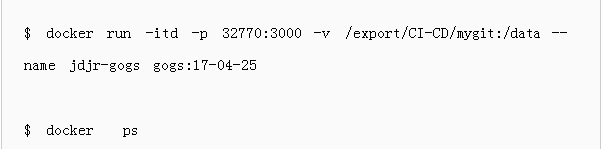
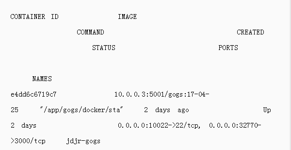
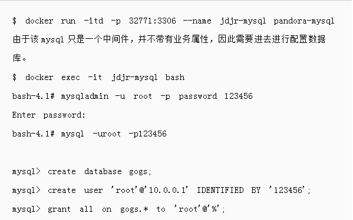
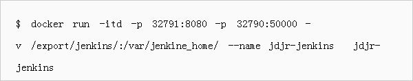
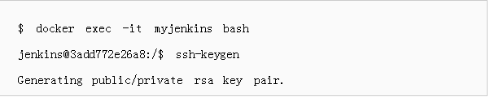
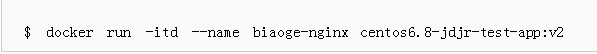

029-86699937 88262419
029-86699937 88262419
029-86699937 88262419
029-86699937 88262419
随着DevOps理念不断的传播，大部分IT从业者对于DevOps本身也有了一定的了解和认识，然而企业内部想根据DevOps思想实践，这并不是一件很简单的事情。一方面由于企业内部的历史环境以及组织结构问题，另外一方面因为业界并没有一套标准的开源工具集可以借鉴（关于几家基于Docker创业的服务提供商暂时除外）。
那么该篇内容主要讲解如何借助开源工具结合CI/CD的场景，将Docker融入到部署单元中去，进行持续集成、测试到最终的持续部署，开发人员最终只需要去关注业务的访问入口就可以知道业务是否正常，并可以通过一系列的监控工具去及时发现业务异常。
在整个DevOps部署流水线中需要以下几个部分：CI部分、CD部分、服务调度（治理）部分、监控部分、日志部分。本篇文章将通过一个简单的go-web应用去进行基于Docker的CI/CD流水线的测试。
一个完整的流程入上图所示，用户（也就是开发人员）将包含Dockerfile的源码从本地push到Git服务器上，然后触发Jenkins进行构建源码，源码构建完成后紧接着进行Docker image的构建，一切构建完成之后，顺带将构建成功的image上传到企业内部的镜像仓库，到此刻为止，其实一个基本的CI（持续集成）已经算是结束，剩下的部分就是持续部署或者进行持续的交付开发产物了。
在以前传统的软件发布模式中，持续集成的产物是编译打包好的代码，如果想要发布程序，发布系统需要在持续集成的制品库中去获得对应的代码，然后根据一系列的环境检查来准备应用的运行时环境，而在此过程中往往会涉及到比较多的基本组件依赖，所以在整体的发布周期内来看，还是有一些问题的。
在Docker或者容器时代，我们将容器的镜像构建部分融入到持续集成（CI）环节，最终持续集成的产出物是一些已经处理好依赖关系，基本不需要人工进行二次干预的Docker image，而在CD环节，发布系统只需要设置和管理很少的信息就能够很快将image运行起来，快速地将业务发布出去。
在上面整个环节中，其实无非就是增加了Docker的那一层处理，但其实在整个软件开发的生命周期中，它是产生了极大的影响的。
首先，部署系统不需要为统一的部署框架去做更多逻辑抽象，业务研发在开发代码的过程中选择自己依赖的base image即可，最终运行起来的业务也就是你当时提供的base image的模样；
其次，由于base image已经处理好了相关的依赖，所以当发布系统拿到业务的image的时候，发布操作将会变得异常迅速，这对于互联网时代可谓是非常重要的；
最后一点，也是我感受最深的，就是研发构建好的image可以在任何的Docker环境中run起来，研发人员不需要再关系环境一致性的问题，他们在自己本地的测试环境能够运行起来的应用，那么到生成环境也一定可以。
为什么第三点我感触比较深呢？因为以前经常有研发兄弟跑过来跟我们讲，我们代码在本地运行一切顺利，代码给你们上到生产就各种问题。所以如果在整个流程中使用Docker image来讲所有的环境固化，从此mm就再也不用担心和研发兄弟扯皮环境不一致的问题啦。
一、自助式Git管理工具Gogs的部署安装
Gogs部署
Gogs部署在10.0.0.1主机上，映射到宿主机端口为32770


MySQL建库授权
MySQL部署在10.0.0.2上，映射到宿主机端口为32771

配置Gogs
上面两步没有问题之后就可以直接访问:ip:32770 （也就是Gogs暴露的端口）进行相关的配置。
配置完成后进行初始化，并创建管理员用户后就可正常使用。
二、Jenkins持续集成工具部署安装
Jenkins部署
Jenkins在官方的image基础上增加了go 1.7的编译环境，部署在10.0.0.2上，映射到宿主机端口32791。

注意：需要将Jenkins相关数据以及编译环境映射到Docker宿主机上，因为后期编译完成后Jenkins容器需要docker build构建业务image。
Jenkins容器运行起来之后，就可以直接访问10.0.0.2:32791进行初始化安装配置了。
在Web上面访问Jenkins地址进行初始化配置，需要写入ID进行解锁Jenkins（Web上会提示在哪个路径下存放，直接使用docker logs也可查看）；解锁后就是正常的安装相关的Plugins了，只要网络没有问题，一般都正常通过。
创建Jenkins项目，并配置构建脚本（也可通过相应的Plugins进行配置）。
创建一个新的名为test的项目，配置相关的源码管理以及构建条件以及相关的后续操作。
配置Jenkins环境
注意：由上图可以看出来，Jenkins进行构建image和持续部署测试的过程都是通过SSH到远端去执行的，因此需要再Jenkins容器中生成SSH公私钥对，并和Jenkins的宿主机以及持续部署测试的宿主机进行免密认证。虽然Jenkins本身其实支持了很多种Plugin来支持管理Docker的，比如说Docker build step plugin、Docker Build Publish Plugin，但是由于过多的Plugin会造成实际环境中的维护成本大大增加，因此我们选择简单粗暴的脚本方式，上图中的Execute shell只是简单的示例。

生成公私钥对之后，将公钥传给要远程部署的机器就OK了，目的是要让Jenkins容器能够免密登录远程服务器，并能执行sudo命令。
三、通过配置Nginx反向代理来访问Git，Jenkins以及测试实例
反向代理Nginx部署在10.0.0.4:80上。
配置Nginx
注意：centos6.8-jdjr-test-app:v2镜像默认是包含Nginx以及配置管理工具的。

测试访问
在本地绑定hosts
访问mygit.biao.com上面的源码
访问jenkins.biao.com上的构建任务
注意：test项目在之前我们已经配置好了，所以可以直接触发构建部署。
访问web.biao.com服务
持续集成持续部署的效果
更新源码中的部分内容，进行重新构建访问。
在Jenkins上进行再次构建
再次访问web.biao.com服务：
对比前后两个Web，发现不仅欢迎语由“biaoge”变成了“逼格运维说”，而且第二行的字符串由4e7853008397变为0ce402beclle，也就是是之前的那个Container已经被销毁，我们现在访问的web.biao.com是重新编译后运行在新的container里面的实例。
总结
至此，整个基于Docker的CI/CD流水线的流程基本完成，其实可以看到对于研发兄弟来说，每次的提交代码都会触发一次编译构建，并且最终会run起来一个新的Container，并且直接对外服务。当然在整个过程中对于集成、发布部分演示的都比较粗浅，这里只做一个引子，对于企业内部一整套的流程体系来说，光有持续集成和持续部署也是远远不够的，服务上线后的基础监控以及业务的日志监控还有整个业务调度都是需要进行协同考虑的（在容器云平台的构建中CI/CD只是最基本的流程，想要做好整个平台，还需要监控、日志以及调度方面的能力才能做到麻雀虽小，而五脏俱全）。
在Docker理念大行其道的今天，我个人认为我们需要更深层次的去考虑实际场景中它带给我们的优势和劣势，并且要思考如何与当前整体系统架构以及运维研发架构进行衔接，如何去为配合研发去做敏捷开发以及持续的交付，为企业产生更大的效能。
本篇文章为前一个月实践所得，今天重新编辑整理，如有部分章节读者有疑问可以随时勾搭作者。希望有共同爱好者一起交流关于Docker方面的东西。